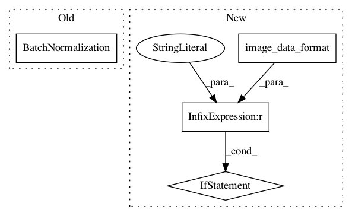

9557bc7148658225ef084b9886bbe560ded6c9e5,keras_/models/mobilenet.py,,conv_block,#Any#Any#Any#Any#Any#Any#Any#,17
Before Change
padding=ke_padding,
use_bias=False,
name=name+"/conv")(x)
x = nn.BatchNormalization(
axis=-1,
momentum=0.9,
epsilon=1e-5,
name=name+"/bn")(x)
x = nn.Activation("relu", name=name+"/activ")(x)
return x
After Change
use_bias=False,
name=name+"/conv")
bn = GluonBatchNormalization(
axis=(1 if K.image_data_format() == "channels_first" else 3),
momentum=0.9,
epsilon=1e-5,
name=name+"/bn")
In pattern: SUPERPATTERN
Frequency: 3
Non-data size: 4
Instances
Project Name: osmr/imgclsmob
Commit Name: 9557bc7148658225ef084b9886bbe560ded6c9e5
Time: 2018-09-21
Author: osemery@gmail.com
File Name: keras_/models/mobilenet.py
Class Name:
Method Name: conv_block
Project Name: tensorflow/models
Commit Name: a3e847b610a9ac39a719033393801a0c7af51eb2
Time: 2020-10-16
Author: arashwan@google.com
File Name: official/vision/keras_cv/layers/deeplab.py
Class Name: SpatialPyramidPooling
Method Name: build
Project Name: osmr/imgclsmob
Commit Name: ccd8a225512ac736b181792c72a3d45e4ff3160b
Time: 2018-09-21
Author: osemery@gmail.com
File Name: keras_/models/darknet.py
Class Name:
Method Name: dark_conv